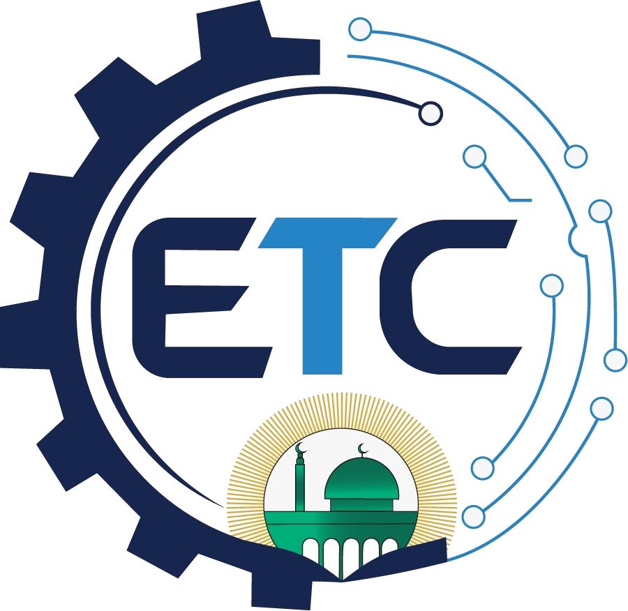

لو رجع فيكم الزمن لأول يوم إلكم في الجامعة، شو النصيحة اللي كنتوا تتمنوا حدا يحكيلكم إياها وقتها؟
هل في موقف أو تجربة خلال مسيرتكم الأكاديمية أو المهنية غيّرت طريقة تفكيركم أو نظرتكم للحياة؟
كثير من الطلاب بعتقدوا إن النجاح مرتبط بالذكاء أو التفوق الأكاديمي، من وجهة نظركم، شو العامل اللي فعلًا بصنع الفرق بين شخص ناجح وشخص عادي؟
برأيكم، هل الجامعة وظيفتها تخرّج طالب عنده معرفة أكاديمية فقط، ولا تخرّج شخص قادر يتعامل مع تحديات الحياة وسوق العمل؟
كيف ممكن الطالب يوازن بين دراسته الجامعية، وتطوير مهاراته الشخصية، والمشاركة في الأنشطة الطلابية، بدون ما يكون في جانب على حساب الثاني؟
لو طلبنا منكم تحددوا مهارة واحدة، بتتمنوا كل طالب جامعي يتخرج وهو متقنها، شو بتكون؟ وليش؟
مع التغير السريع في العالم ودخول الذكاء الاصطناعي في مختلف المجالات، كيف بتتوقعوا شكل سوق العمل خلال السنوات القادمة؟ وكيف لازم الطالب يستعد له؟
هل بتشوفوا إنه الشهادة الجامعية لحالها ما زالت كافية لتمييز الخريج في سوق العمل؟ وشو الأشياء اللي لازم تكون معها؟
لو أعطيناكم فرصة توجهوا رسالة واحدة لكل طلاب الجامعة، بغض النظر عن تخصصاتهم وسنواتهم الدراسية، شو بتحبوا تحكولهم؟
سؤال أخير، لو رجع فيكم الزمن واخترتوا تخصصكم من جديد، هل رح تختاروه مرة ثانية؟ وليش؟